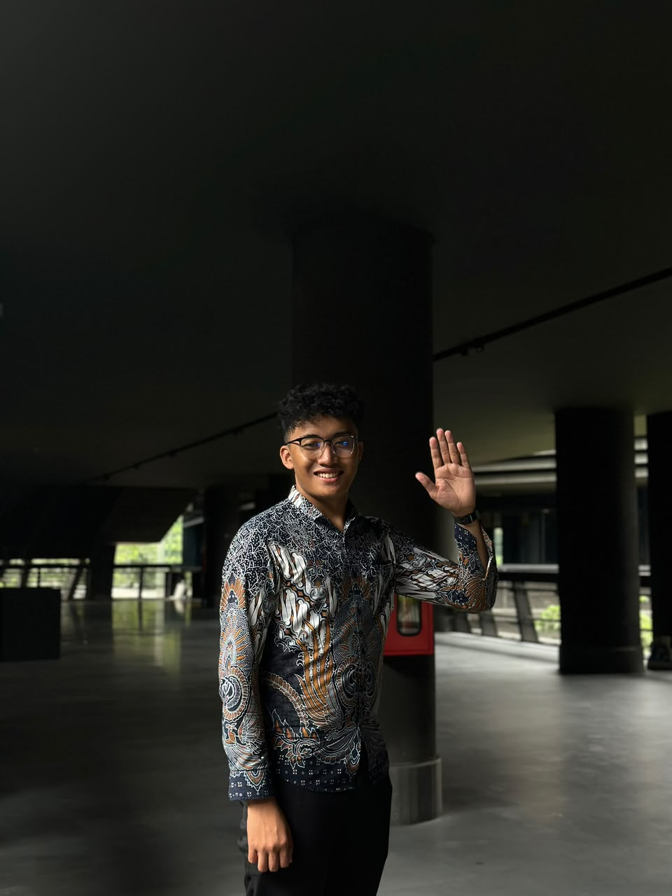

Organisasi itu bukan jabatan,
tapi cara bagaimana kita bekerja bersama.

Pembuka
Pernah kerja kelompok, tapi yang kerja cuma satu orang?
Angkat tangan kalau pernah.Kalau kerja bareng sesusah itu, kenapa manusia tetap berorganisasi?
Bagian 1 · Memahami Organisasi
Tiga syarat lahirnya organisasi
Tujuan Bersama
Ada hal yang ingin dicapai bersama.
Kemauan Berkontribusi
Setiap orang mau menyumbang tenaga dan waktu.
Komunikasi
Ada jalur untuk bicara dan menyamakan langkah.
Referensi: Chester Barnard, The Functions of the Executive (1938)
Bagian 1 · Memahami Organisasi
Organisasi ada di mana-mana
Tidak harus punya AD/ART.
Kelompok piket, tim futsal, panitia 17-an di RT, sampai grup belajar daring juga organisasi.
Ketuk lingkaran untuk melihat contohnya
OSIS & Ekskul
Ada struktur, proker, rapat, dan anggaran: tempat latihan organisasi yang paling lengkap.
Kemampuan berorganisasi adalah kemampuan hidup bersama orang lain.
Aktivitas · 5 menit
Tulis 3–5 organisasi dalam hidupmu, termasuk yang tidak resmi.
Referensi: Clay Shirky, Here Comes Everybody (2008) · Robert Putnam, Bowling Alone (2000)
Bagian 1 · Memahami Organisasi
OSIS adalah laboratorium
Sekarang
OSIS
Ruang paling aman untuk mencoba dan gagal.
Kuliah
BEM / UKM
Skala lebih besar, tanggung jawab lebih nyata.
Bekerja
Dunia Kerja
Kesalahan berdampak pada pekerjaan dan orang lain.
Seumur hidup
Masyarakat
Kepemimpinan menjadi kontribusi.
Kalian tidak sedang main organisasi. Kalian sedang latihan untuk hidup.
Bagian 2 · Kepemimpinan
Mulai dari “mengapa”
What · yang sering kita ucapkan
“Kita bikin pensi sekolah.”
Why · yang menggerakkan orang
“Kita ingin memberi panggung bagi teman yang selama ini tak terlihat.”
Referensi: Simon Sinek, Start With Why (2009)
Bagian 2 · Kepemimpinan
Tiga posisi seorang pemimpin
Sejalan dengan servant leadership: pemimpin hadir untuk menumbuhkan orang lain.
Referensi: Ki Hajar Dewantara · Robert Greenleaf, Servant Leadership (1977)
Bagian 2 · Kepemimpinan
Fokus pada yang bisa kamu ubah
Tebak dulu, lalu ketuk: bisa kamu ubah atau tidak?
Kuncinya: kecerdasan emosi
Sadari kapan kamu lelah, kesal, atau terburu-buru.
Tahan reaksi pertama, terutama di grup chat.
Tanyakan alasannya dulu sebelum menilai.
Referensi: Stephen Covey, The 7 Habits of Highly Effective People (1989) · Daniel Goleman, Emotional Intelligence (1995)
Studi Kasus · 12 menit
Ketua yang kesepian
Raka, Ketua OSIS, punya banyak ide bagus. Tapi rapat sepi, tugas molor, dan akhirnya ia mengerjakan semuanya sendiri.
Pertanyaan 1
Apa yang salah dari cara Raka memimpin?
Pertanyaan 2
Apa yang mungkin dirasakan anggotanya?
Pertanyaan 3
Apa langkah pertama Raka besok pagi?
Arahan jawaban untuk pemateri
- Raka tidak membagikan why-nya. Anggota tahu apa yang dikerjakan, tapi tidak tahu untuk apa.
- Raka selalu di depan dan tidak pernah mundur untuk memberi ruang.
- Anggota tidak dilibatkan sejak awal, jadi tidak merasa ikut memiliki.
- Anggota mungkin merasa tidak dipercaya, tidak dibutuhkan, atau takut salah.
- Langkah pertama: ajak bicara satu per satu, tanya apa yang menghambat, lalu bagi tanggung jawab yang jelas.
Bagian 3 · Tim
Tim tumbuh bertahap
Tahap Storming · tanda-tandanya
Muncul beda pendapat, gesekan antardivisi, rebutan peran.
Tugas pemimpin
Fasilitasi konflik secara terbuka. Bahas di rapat, jangan dipendam.
Ingat
Storming itu normal. Bahayanya adalah kalau tim terjebak di sana.
Referensi: Bruce Tuckman (1965) · Tuckman & Jensen (1977) · Bulan hanya perkiraan kasar untuk kepengurusan satu tahun
Bagian 3 · Tim
Lima penyakit tim
Gejala di OSIS · Tidak saling percaya
Anggota menutupi kesalahan dan enggan minta tolong.
Semua penyakit berakar dari lapisan paling bawah.
Penawarnya
Rasa aman psikologis
Anggota berani bertanya, mengaku salah, dan berbeda pendapat tanpa takut dipermalukan.
Simulasi · 6 menit
Dua divisi berebut tanggal dan anggaran yang sama. Sepakati jalan keluarnya.
Pengamat: siapa yang diam, siapa yang mendominasi, bagaimana keputusan diambil?
Referensi: Patrick Lencioni, The Five Dysfunctions of a Team (2002) · Amy Edmondson, The Fearless Organization (2018)
Bagian 4 · Komunikasi
Bicara tanpa menyerang
Menyerang
“Kamu tuh nggak pernah serius!”
Membangun
“Laporan divisimu belum masuk dua kali.
Aku cemas,
karena acaranya tinggal seminggu.
Bisa kita cek bareng besok sore?”
Referensi: Marshall Rosenberg, Nonviolent Communication (1999) · Patterson dkk., Crucial Conversations (2002)
Bagian 4 · Komunikasi
Ide yang mudah diingat
Kurang melekat
“Acara ini meningkatkan literasi siswa.”
Lebih melekat
“Tahun lalu, 7 dari 10 teman kita tidak meminjam satu buku pun.”
Ilustrasi Ganti dengan data asli sekolah sebelum dipakai.
Referensi: Chip Heath & Dan Heath, Made to Stick (2007)
Bagian 5 · Keberlanjutan
Pengurus yang berhasil meninggalkan organisasi yang tetap berjalan baik setelah ia lengser.
Dokumentasi
Catat keputusan, kontak, dan anggaran agar tidak hilang.
Regenerasi
Siapkan adik kelas sejak awal, bukan di bulan terakhir.
Evaluasi Jujur
LPJ adalah peta untuk pengurus berikutnya, bukan formalitas.
Apa yang akan kamu wariskan?
Referensi: Peter Senge, The Fifth Discipline (1990) · Peter Drucker, The Effective Executive (1967)
Penutup
Tiga hal untuk dibawa pulang
-
Organisasi dimulai dari tujuan bersama, bukan struktur.
-
Pemimpin diukur dari tumbuhnya orang di sekitarnya.
-
Komunikasi adalah pekerjaan utama organisasi.
Komitmenku
Terima kasih.
Khansa Eka Maulana · @kansaekaa · @bemkmsvugm